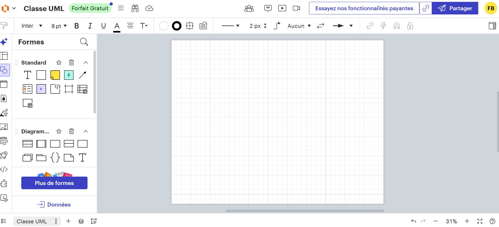
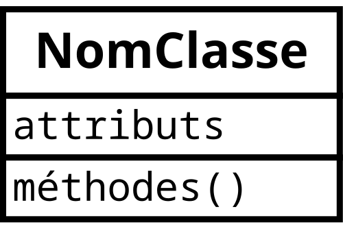
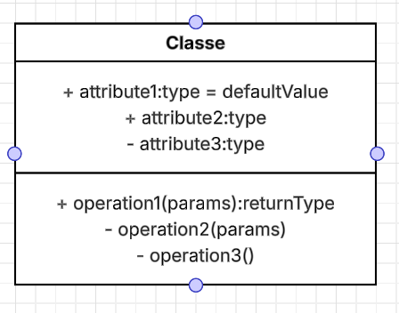
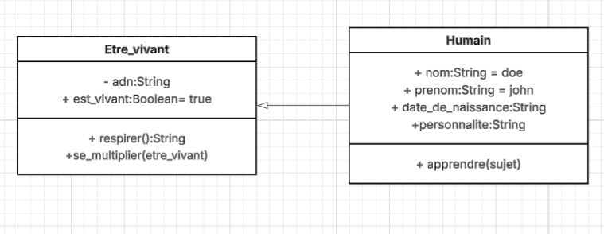
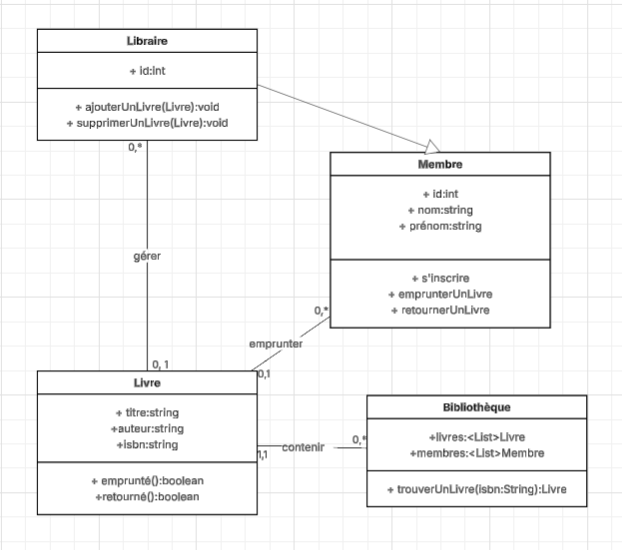
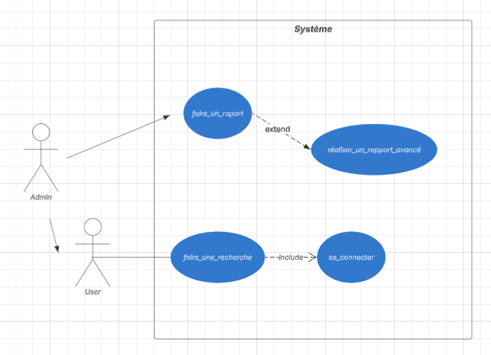
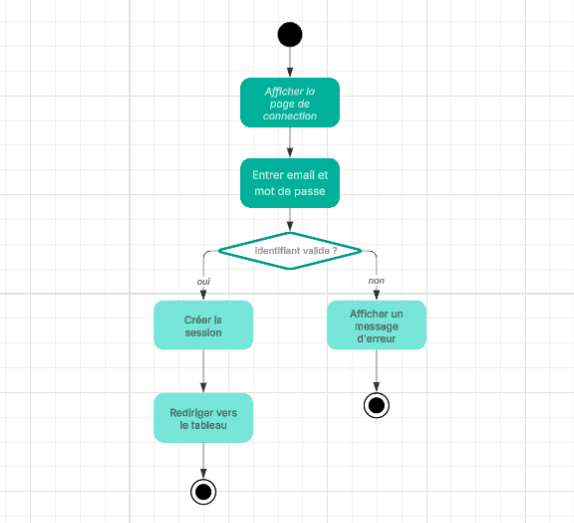
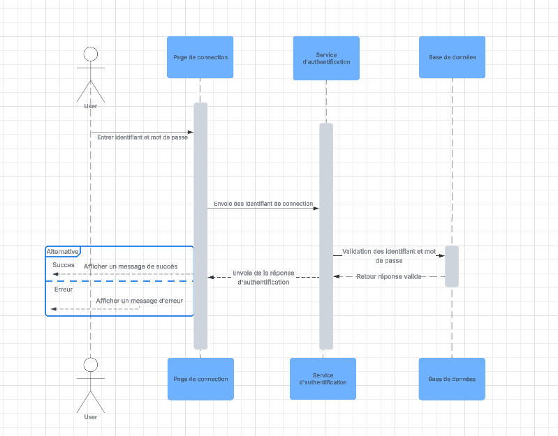

L'UML est un langage de modélisation graphique utilisé pour représenter les systèmes logiciels.
Il existe différents types d'UML, chacun ayant ses propres caractéristiques.
Outil pour réaliser les diagrammes UML : Lucidchart
https://lucidchart.com/
#Structure
Un diagramme de classe comporte des classes, des attributs, des méthodes et des relations entre les classes.
Les classes sont représentées par des rectangles séparés en trois parties : le nom de la classe, les attributs et les méthodes.

Exemple d'une classe dans lucid chart

+ public
- private

Human hérite de Etre vivant

#Utilité
Un cas d'utilisation est une action que l'utilisateur peut effectuer sur le système.
Un diagramme de cas d'utilisation comporte des cas d'utilisation, des acteurs et des relations entre les cas d'utilisation et les acteurs.
Acteur : utilisateur qui interagit avec le système
Cas d'utilisation : action que l'utilisateur peut effectuer sur le système
Extend : facultatif, indique que le cas d'utilisation peut être étendu par un autre cas d'utilisation
Include : obligatoire, indique que le cas d'utilisation doit inclure un autre cas d'utilisation

#Décisions
Un diagramme d'activité permet de montrer les décisions réalisables dans un processus.

#Déroulement
Un diagramme de séquence montre le déroulement d'un processus.
Il comporte des objets, des messages et des lignes de vie.
